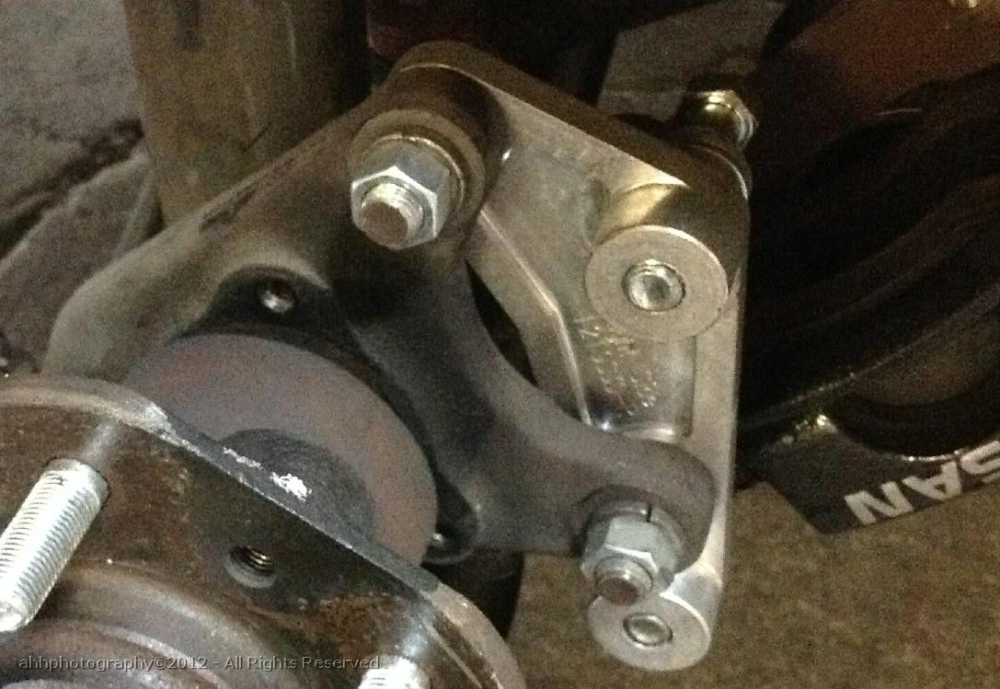
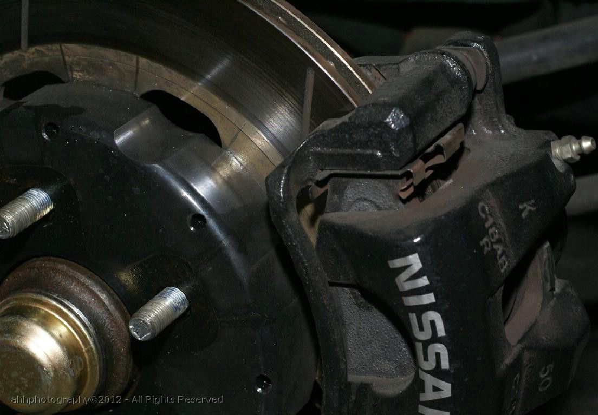
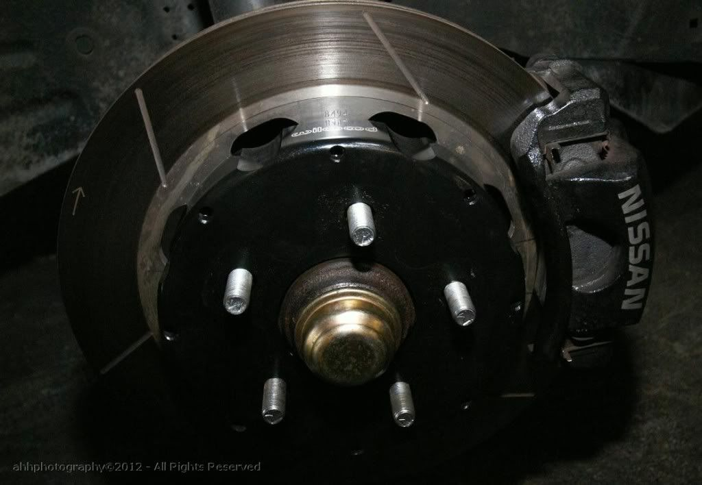
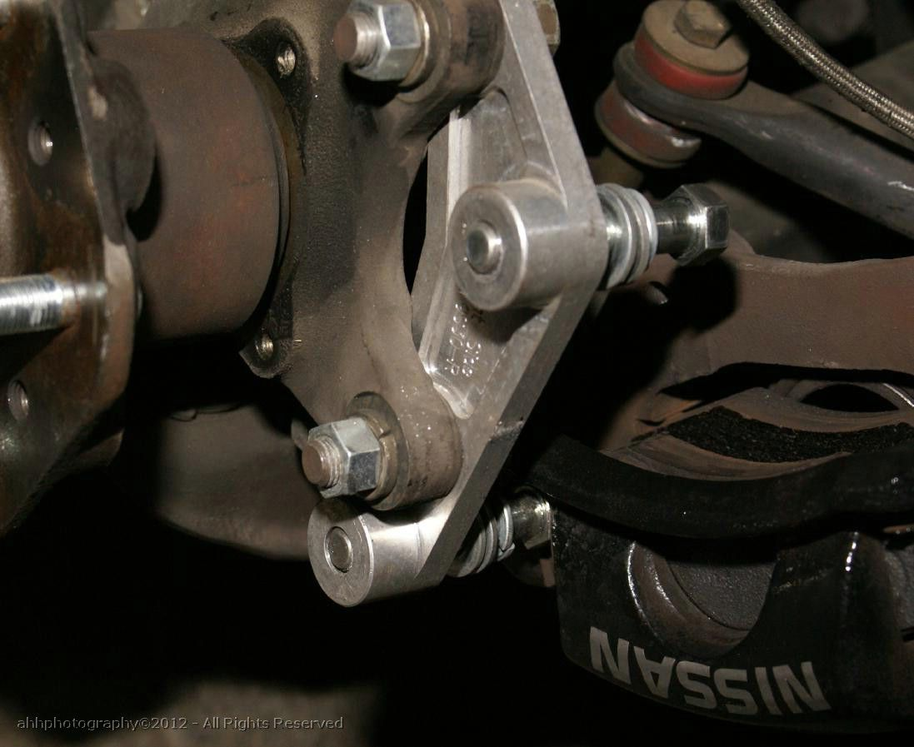
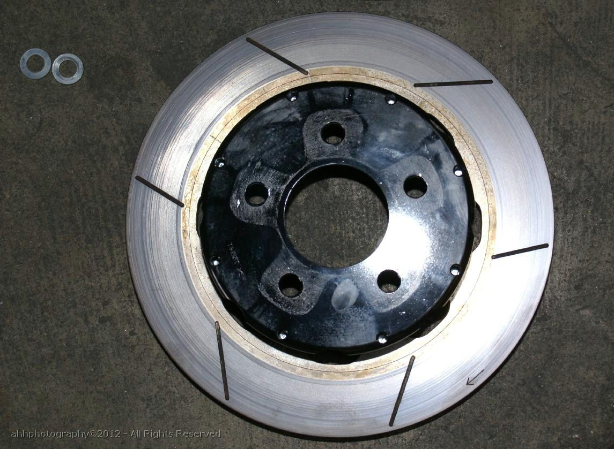

-
I know I posted info in the other thread. But I wanted to set up one for this "kit".
1st .. It is realized that this "kit" ISN'T like the AZ kit .. if you want the AZ kit - go buy it. It's a very well engineered and manufactured kit and could NOT be duplicated for the mass market at a less expensive price.
2nd . This ( WINFactory Z31 BBK) kit also isn't for everyone. But it will (or should) meet 80%-90% of most of the "performance minded" drivers here.
3rd: This is what the WINFactory Kit consists of (for $550)
The Kits includes:
2 - 12.19" Ultra light HP Wilwood Rotors
2 - Wilwood Aluminum Rotor Hats
2 - Caliper Relocation brackets
10 - Z32 300zx rear lug studs (replacement studs for front lugs studs)
4. This kit provides "us" with another option for a BBK. It took years for badgering Matt to put this together for me. He is constantly developing WINFactory products for the Z32 (brakes, engine, aero, etc …). To get him to do something for the Z31 was an effort to convince him that there was interest in a Z31 BBK.
Here is the link to the WINFactory site.
http://www.winfactory.us/shop/WF_Z31_122BBK.html
If you have questions - please call or email Matt.
Matt@winfactory.us
Below are some photographs ..



You don't have much room between the rotor and the caliper

Check out the caliper re-location bracket .. beautiful eh?

12.19" Willwood Rotors
FAQ:
1- Will Z32 caliper's fit? Unfortunately I don't z32 caliper(s) … or they'd probably be on my Z now. Driven Authority did not have any spare calipers "on-hand" to test fit. The thoughts are that the Z32 caliper can fit - the only modificatoin that may be needed is to "grind" a little bit off the caliper to ensure rotor clearance.
(I'm supposed to go back to DA next week for test fitting the z32 caliper)
2- Driven Authority is looking into different options for this BBK.
a) Using z32 calipers.
b) Using a smaller 12" rotor (vs 12.19" .. which when the kit was developed, was the only one available) -
someone enlighten me.
with all these big brake kits and fancy rotors- where does one get replacements if they need to get new rotors?
do i have to procure them from the same place that i bought the originals from (or their manufacturer), or is there a standard bolt pattern that they use for all bolt on aluminum hats, so i'll just have to replace the friction/vane disc itself and not buy the entire rotor assembly again. -
I would imagine they wouldn't go through the trouble of sourcing custom rings for a project that they are not even going to standardize on..
Inq just said they are going to make more than one version, that means different rings and brackets already, it would be a very bad business move to stock anything that way -
so if the company goes belly up, what do i do to get rotors? source another set? -
At the time of the BBK .. Willwood only had the 12.19" rotor that would fit the z31 specs. It's a standard part in the Willwood inventory. So I would presume .. if you needed another rotor assy .. you could order the Willwood part.G-E wrote: I would imagine they wouldn't go through the trouble of sourcing custom rings for a project that they are not even going to standardize on..
Inq just said they are going to make more than one version, that means different rings and brackets already, it would be a very bad business move to stock anything that way
As for going with a 12" rotor .. Matt believes that Willwood "now" has a 12" rotor that would fit the Z31 .. presumably this would be less expensive than the 12.19" rotor .. thereby lowering the costs of that version of the "kit".
So all the parts: Willwood -rotors and hats, Nissan-lugs, etc .. are sourced to other well established manufacturers/vendors or sources. The only custom part via Driven Authority is the caliper relocation bracket .. which he has a small supply on-hand (and has arrangements with a local machine shop)
And as I said .. they are looking into the aspects of making the z32 caliper work .. with the present parts as an option.
I would imagine … that if 1 version of the kit appears to be popular, that would be the kit that would be inventoried. -
If he made the relocation bracket for the Z32 caliper I would buy this kit right away. I hope that he makes this kit for the Z32 caliper soon and im sure he would get lots of sales if he keeps the same price. Keep us posted on the progress the only reason I have not purchased is because I want to go with better calipers than stock. -
I really like the rotated relocation bracket, looks well made.86na - BlueZ
Shiro #366 - Kouki Monster
85t - Mr Tickles -
I don't see why you wouldn't be able to use a Z32 caliper the same way you use one on a stock Z31 setup…just put a washer between the caliper and the bracket.cesar wrote: If he made the relocation bracket for the Z32 caliper I would buy this kit right away. I hope that he makes this kit for the Z32 caliper soon and im sure he would get lots of sales if he keeps the same price. Keep us posted on the progress the only reason I have not purchased is because I want to go with better calipers than stock.- VG30DET (HE341) 86 300ZX - 1982 280ZX Turbo - Headered NA 1986 300ZX 2+2 - 2000 Xterra - -
[quote]michaelp wrote:True, but it is all dependent on what the offset is on the rotor hat is on where it needs to be spaced.Originally posted by cesar86na - BlueZ
Shiro #366 - Kouki Monster
85t - Mr Tickles -
[quote]adamvann3 wrote: [quote=michaelp]Yeah, but if they're designing it to be the proper placement of the caliper to the rotor with the stock Z31 calipers, then the difference would still be the same with the Z32 calipers, would it not?Originally posted by cesar- VG30DET (HE341) 86 300ZX - 1982 280ZX Turbo - Headered NA 1986 300ZX 2+2 - 2000 Xterra - -
I think the amount of work required to put Z32 calipers on 87+ Turbo rotors the same way I myself and many others have done would be all that you would need to do to get the Z32 calipers to work with these brackets/rotors. All I did was bolt them on. lol. I didn't have to space them out. My calipers already had some washers integrated into them. Probably because I ordered 30mm and they gave me 26mm, so they knew what was up?
I don't see how there would be any other mods required considering you're doing essentially the exact same thing. If the bracket repositions the Z31 caliper, it would do the same to the Z32 caliper, obviously. -
Yeah, pretty sure the spacers are only needed if you're going to a Z32 rotor.Careless wrote: I think the amount of work required to put Z32 calipers on 87+ Turbo rotors the same way I myself and many others have done would be all that you would need to do to get the Z32 calipers to work with these brackets/rotors. All I did was bolt them on. lol. I didn't have to space them out. My calipers already had some washers integrated into them. Probably because I ordered 30mm and they gave me 26mm, so they knew what was up?
I don't see how there would be any other mods required considering you're doing essentially the exact same thing. If the bracket repositions the Z31 caliper, it would do the same to the Z32 caliper, obviously.- VG30DET (HE341) 86 300ZX - 1982 280ZX Turbo - Headered NA 1986 300ZX 2+2 - 2000 Xterra - -
Just to be clear, a 30mm caliper will not clamp onto a 26mm rotor properly, you might get late engagement for the first 1/3 of pad life and then popping your dust seals
Careless is using a matching rotor and caliper, it was the intermediate state they were designing stuff, notice z31/z32 rotors are still 280mm diameter?
While z32 calipers in 26mm exist, I can't see people seeking those specifically, so if someone has z32 calipers, it's a very very good chance they are 30mm -
This is true. 26mm Z32 calipers are 90 NA only....they're the only one that will work with stock Z31 rotors, otherwise you need to use the Z32 30mm rotors.G-E wrote: Just to be clear, a 30mm caliper will not clamp onto a 26mm rotor properly, you might get late engagement for the first 1/3 of pad life and then popping your dust seals
Careless is using a matching rotor and caliper, it was the intermediate state they were designing stuff, notice z31/z32 rotors are still 280mm diameter?
While z32 calipers in 26mm exist, I can't see people seeking those specifically, so if someone has z32 calipers, it's a very very good chance they are 30mm- VG30DET (HE341) 86 300ZX - 1982 280ZX Turbo - Headered NA 1986 300ZX 2+2 - 2000 Xterra - -
Ok .. This (I admit it) is what has confused me in that I was aware of different z32 calipers, I wasn't aware of what the differences were/are.michaelp wrote:
This is true. 26mm Z32 calipers are 90 NA only....they're the only one that will work with stock Z31 rotors, otherwise you need to use the Z32 30mm rotors.
My understanding .. Z32s use 11" rotors? With either the 26mm or 30mm caliper?
This BBK is using a 12.19" rotor (looking at lowering the cost with a 12" rotor).
Maybe the 26mm z32 caliper will be just a bolt-on (with or without spacers)?
Maybe the 30mm z32 caliper will bolt-on (with or without spacer) and maybe (or not) some shaving on the leading/trailing edge? See there is very little clearance between the 12.19" rotor and the z31 caliper.
As I said, the plains to test fit a z32 caliper on the 12.19" rotor setup with the DA bracket.
I'll report on the test results .. Hopefully by the weekend (by this I meant "next" weekend .. Oct 6-7)


Copyright © 2006–. All rights reserved. Privacy Policy